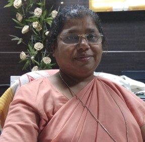

ST. JOSEPH CONVENT HIGHER SECONDARY SCHOOL
CORNUCOPIA 3
~ a plethora of all the good thingsThe E-Magazine 2021PRINCIPAL'S DESK

My dear Parents, Teachers and Students,
I was always attracted to the thought – Home is the first school and School is the second home. In fact, today it has come true. Corona virus has altered our life including our school system, teachers, children and parents. Schooling is our first contact with the world, a period of joy, healthy competition, fearing, adjustment, sharing and love. Our homes have become schools and parents have become teachers too. Unimaginable! But it’s a fact we have to live with now and invariably it is happening- whether we are rich or poor, far or near.
It is not the wide open spaces, classrooms, the library, laboratories or the large fields that make the school. It is in the heart of the students and staff that the true institution exists. E-learning has emerged as the best way of imparting education. Right now, we see ourselves, collectively facing this pandemic, a situation for which we had no experience and little preparation.
At this time, when the whole world is battling against it, St Joseph’s Convent Higher Secondary School has added another feather to its cap; the E-magazine, to provide our students a stage to bring out their creative thoughts and expression. It gives me great joy to meet you all through this E-magazine-a great way to communicate and be creative. Enjoy our magazine as we move on with our lives. I thank all who contributed to this endeavor.
Michael Jordan said “Talent wins games, but teamwork and intelligence win championships”. This magazine, indeed, is an honest effort to showcase not just the talents of our budding authors, poets and artists, but also to give them a platform to launch themselves and touch the sky. The outstanding articles, poems and artwork of our gifted and innovative minds are sure to captivate the imagination of the readers. With complete faith in their hard work, we are sure that their original ideas will certainly excite and elate your thoughts.
According to academic analysts, the youth of today are more prone to violence and deviant behavior. This deteriorating trend is a matter of great concern to parents as well as teachers. We are all aware through media reports of incidents of abuse, self-inflicted violence, violent outburst, depression, violence using social media and other on-line forms.
Learning is not a process limited to schools and colleges only, nor does it end with the conclusion of one's school career. It is indeed a lifelong process. 0ur School is oriented to the total formation of a child and to adaptations of various methods suiting the dynamics of changing world in order to achieve common goals and objectives. It is further characterized by shared vision - responsibility and above all, love and faith in God in order to achieve these goals. Dear students, it is my message to you all that the people of fine character live by their values. They are honest and are committed to truthfulness in thought, word and deed. True character thus encompasses the capacity for self-discipline. Character creates self-respect, which in turn leads to high self-esteem.
Maturity is reflected in all aspects of character - the decisions we make, the friends we choose and the responsibilities we accept. Always remember to uphold the dignity of people. Be always ready to give preference to other. What you are is god's gift to you. What you become is your gift to God. Have something to live for. Bring out the best in you. Cooperate with your teachers and school authorities. We wish only your wellbeing “With warm wishes and God's blessings".
PRINCIPAL
THE EDITORIAL REPORT
Michael Jordan said ““Talent wins games, but teamwork and intelligence win championships. This magazine, indeed is an honest effort to showcase not the talents of our budding authors, poets and artist but also to give the a platform to launch t themselves and touch the sky. The Outstanding article’s poems and artwork of our gifted and innovative minds which are sure to captivate the imagination of the readers with complete faith in their hard work.
We are sure that their original ideas will certainly excite and elate the thoughts of the readers. The editorial team takes this beautiful opportunity to express its sincere gratitude to our Principal Sister Anjana for entrusting us with the responsibility of adding another chapter to the history of THE E- Magazine of SJCS. We thank sister for being a constant support throughout the process from the conceptualisation of the idea to the last stage of publication of the grand work of our students. Fire is the test of gold; adversity, of strongmen. Indeed this pandemic has proved the battlefield for the golden strength of humankind.
Not only have you survived the test but emerged victorious achieving milestones in the worlds largest vaccination drive against COVID-19 virus well as government and medical fraternity worked together to look into a physical well -being ,educators worldwide worked hand in hand to keep up with the demanding times and worked towards nurturing, sound mental health of the young generation. Our school with its motto a ”Virtue alone Enobles” remained steadfast to its cause and left no stones unturned to provide the best education keeping up to the standards.
Students of SJC not only stood the test of time but also proved their mettle in the board exams braving all odds The young Josephites also aced in the field of sports and brought laurels to the institution. Though problems were knocking at the door at all times yet our budding stars overcame difficulties and bagged prizes at various zonal and regional level literary competitions. Celebrations of Independence Day and Teachers day added to the much needed boost required to pump back the hope of a COVID- FREE world post pandemic. Support and cooperation of all stakeholders of the institution has made the journey so far worth fighting for aspirations and dreams of a beautiful future continues to take shape in our minds ,We strive to put a best foot forward in all our endeavours.
The E- magazine is a continued effort to bring out the innate blessings of each soul who has been entrusted into the care of SJC. We hope that the tiny steps taken by each child towards his/ her dreams encapsulated in this E-general will bring an overwhelming response from all readers .We also extend our heartfelt gratitude to all the parents for their continued support to the institution. The school reopened in July with offline classes and we are happy that indeed you all have walked that mile to ensure that your children will be safe with us and make best use of their time .We hope that you would enjoy going through the E- edition of the magazine which is like an enchanted ocean of brilliance. We wish you all happy end fun filled days with your loved ones. May he divine grace keep us all safe and healthy during this trying periods.
Happy Reading.
Editorial Team
Sasmita Patel
Rupa Sahu
EDITORIAL COMMITTEE
Editorial Director
Sister AnjanaGraphics & Compilation
Ms. Bidya SatpathyMs. Arpita MishraEditing
Ms. Leena NandaMs. Sasmita PatelMs. Rupa SahuCoordinators
Mr. V.S RaoMs. Tusharika SarangiStudent Advisor
Ansuman DharArt Gallery
Here’s a visual representation into the wondrous and creative mind of the Josephite’s


Stories & Poems
Rather than just saying that a Pen is mightier than the sword, let’s provide you with an input into the minds of the Josephite’s and prove our might.
For the awesome collections of stories & poems by our young writers, please select from below or scroll further.
The Secret Weapon
Once there was an old king named Aldorado. He ruled over a large part of Asia and all his rival kings greatly feared him. He was a kind, generous, powerful and compassionate ruler who ruled for the welfare of his subjects. He was a very religious man and donated large amount of money, clothes and garlands to the temples. The king had three sons who were equally skilled in all fields. The thought that was worrying him was the rising power of King Rayuka. He was often called as the “Dark Lord” by other kings as he was the ruler who had never suffered defeat in any battle. He mercilessly used his sword against his enemies and knew defeating Aldorado was not an easy task. Rayuka’s army was huge and was headed by a number of well-trained Generals. In due course of time Rayuka conquered all the neighbouring kingdoms of Aldorado. Suddenly one day, Rayuka waged a war against Aldorado. It was going difficult for Aldorado, each and every day he lost thousands of soldiers and this drained the Royal Treasury. In a time of three days Rayuka took the two of the largest states Leotaet and Fardinabad under his control.
Aldorado, then realising the crisis, called his Ministers, Officials, Generals, Advisors and his sons in the Royal Court. Aldorado said, “If we do not do something quick then soon, we will suffer death in the hands of Rayuka. We should think of a smart and effective plan.” After some time Prince Sagitario, his eldest son asked his father, “Father, I wonder, how can a person be so powerful and so undefeatable? I think Rayuka has a secret weapon using which he defeats his enemies.” Then one of the Advisors said to the king, “Your Majesty, if the prince thinks that way, then I advise we should send a spy to reveal the truth.” Aldorado ordered some spies to find out the truth. But he saw no sign of their return. He again sent other spies but this time also they did not return. He became worried about this. Just then a soldier entered the court and said to the king, “Your Majesty, early this morning in the midst of the battle I heard a faint scream. Along with me there were some soldiers who heard the scream, they told me that it is the voice of one of the spies sent by your Majesty.” The soldier bowed and left the Royal Court. Then Prince and Commander Capri said to Aldorado, “Father, I also have noticed that King Rayuka only targets the powerful army of guerrilla warriors and Generals even if he has got a chance to capture any state, he still targets them.” “Father, so it is clear that Rayuka has no interest in conquering the lands, so what does he want from us? Why does he keep fighting with powerful forces?” asked Mighty Prince Subhasa to his father. “I will take the risk and search for any clues to reveal the secret” said brave Prince Sagitario. Then Subhasa said, “No brother I won’t let you go alone in such crisis, I will come with you since I am stronger than you I can help you.” But Commander Capri said, “None of you two know where the the places are situated, also there are some secret tunnels and underground holes unknown to everyone except me. I will guide you way to search each and every place.” King Aldorado thought about this plan for some time then he said at last, “Yes maybe this plan is perfect but be careful my sons.” “Don’t worry father, we will find out the truth and come back after defeating Rayuka.” said three of them.
At midnight, the three princes crept out of the battleground and made their way towards Pegas. Pegas was situated in between Fardinabad and Leotaet. When they reached the outskirts of Fardinabad, many guards were guarding the entrance. The guards stopped them and one of them asked them purpose their visit. Then Sagitario told them that they were pilgrims from Fardinabad and they had gone to Mecca for some months and were returning today. The guards let them in and they continued their journey. After 7-8 hours they reached Pegas. Just then they saw a group of soldiers charging towards them. The princes thought that maybe the soldiers identified them. So Subhasa took out his club and started to kill them one by one. Just in a matter of seconds Subhasa killed all the soldiers. His brothers praised his strength and then Capri led them to some secret passages which helped them search each and every place quickly. Soon they discovered that Rayuka lived in a grand Palace which was guarded by soldiers on all sides. Sagitario said, “Oh no! Now it will be difficult to enter the Palace without fighting the soldiers. Also we are only three how can we fight an army of soldiers?” But Capri said to his brother, “Don’t worry. I know a secret hole through which we can enter the Palace.” So he led them to the hole and soon they reached inside the Palace. “We need to be very careful now.” said Capri. They saw some clothes of soldiers lying in the floor. They wore them in order to blend with the soldiers. They made their way out of the room and saw many soldiers and servants, but none suspected them.
Soon they came across a room where they could hear loud screams. When they went inside the room, they saw Rayuka was holding a man with his hands. To their surprise the man was becoming older and older while Rayuka was laughing. Soon the man fell down in the floor, dead. Suddenly the green gem in Rayuka’s crown started to glow brighter. He said to himself, “Now I have more power than before, now no one can defeat me with my incredible power!”. The brothers were horrified on what they saw now. None could understand how it could happen. But Sagitario told them that maybe the glowing gem in his crown is the secret weapon which enables him to absorb other’s power and ultimately kills them. “So we need to destroy the gem, else he will absorb our power also.” explained Sagitario. So they came out of their hiding place and Capri taking out his swords, called out to Rayuka, “Rayuka we are the sons of King Aldorado. We have come here to take revenge and take back what belongs to us.” Rayuka turned back and looked at them. He said, “How did you rats enter my Palace? But nevermind, I will absorb your powers and then I will teach you a lesson that weaker people should never interfere in powerful people’s work.” Capri told his brothers to attack from different sides and use full force. Rayuka took out his club and started to attackthem. Sagitario climbed up a large box and from there he started to shower arrows on Rayuka while Subhasa using his club and Capri using his swords fought him on the ground. Rayuka was a skilled warrior, he fought three of them very efficiently. Suddenly he struck a heavy blow to Capri and he fell down. Rayuka was going to absorb Capri’s power when one of Sagitario’s arrow pierced his hand. Taking advantage of the situation, Subhasa struck the gem in the crown, breaking it. Capri again stood up and grabbing one of his swords he cried, “Now we will take our revenge!” then piercing it in Rayuka’s chest he killed him. Thereafter the princes returned back to their kingdom while without the king the armies of Rayuka fled. Aldorado regained all his lost territories. Everyone was thankful to the three brothers and they lived peacefully forever.
~ Sreyas Majhi
Class - 7 C
Corner Of The Universe
In this universe, there is our planet Earth. In our planet there are many people who are always doing some work. Children are playing whereas adults go to work. There are also such people who study space. They are known as space scientists. Mr. Bignut Destin, the boss of some of the people, entered with his son and his best friend's daughter, Clara Gentillesse. Because she was interested in space studies. They were all just introducing themselves and chatting away happy, when suddenly one of the scientists looking through a telescope shouted “A PLANET! A PLANET WITH LIFE!” “WHAT!” Cried Mr.Destin and pushed him aside and looked into the telescope. Clara was beyond speechless. What if it was actually a planet that supports life? It would be a great discovery. But then Mr.Destin said “Are you stupid? It was just a shooting star!” And the trio went home after that.
But in the planet, the one that was about to be exposed, was in chaos. The planet there was different than ours. The plants and trees are crooked and blue. The water was also blue, as if the planets favourite colour was blue! Their ears were pointed like antennas and they were green in colour. The weirdest thing about that place was the people inhaled nitrogen and exhaled oxygen! And of course, the trees gave out nitrogen. And because of these weird trees and the way the life survived. There was no ozone layer. So they actually created an ozone layer and managed like that. By mistake the ozone layer was deactivated and there were changes in just one second. The thing is that, the ozone layer makes the planet invisible and that was all the chaos. In all of these people, there are these two sisters, Natasha Nuevo and Samantha Nuevo. Natasha was a space scientist and worked in a space research centre, NISA. Meanwhile Samantha had her own lab, Jellylabs, where she made the craziest experiments which the authorities unproved of. So, she and her sister mostly used these inventions in secrecy. One day, after a tiring day, Natasha went to Jellylabs, to her sister’s lab. It was all dark there. So Natasha thought Samantha had went home and turned to retreat but then suddenly the lights switched on and Samantha shouted “SURPRISE!” Natasha turned around smiling to see a very happy Samantha pointing towards something that was covered in a huge plastic sheet. “What is it?” Asked Natasha curiously. “Dear Natasha, it is a TELEPORTING DEVICE!” Said Samantha and pulled the sheet off which revealed a two seated sofa type of thing. Samantha gestured Natasha to sit on the machine. So, both of the girls sat on it and while Samantha was tapping on the buttons to activate it, Natasha thought that this could be one of the greatest achievements of their world, and they could also be friends with the new beings. While Natasha was deep in thought, Samantha had a problem and in lack of patience, she clicked on some button and there was red light glowing everywhere and shouts of ‘ERROR’ everywhere. Samantha unbuckled herself from the seat and tried to make it normal. “WHAT’S HAPPENING? SAM!” Just when Natasha said ‘sam’ Samantha said “NO!” And Natasha vanished.
Natasha suddenly felt an urge to shut close her eyes. So, she did and the next moment when she woke up, she was sleeping on the ground, on something green. She stood upend looked down to see grass. Then when she looked around, she was speechless! All the trees, the water, the air she was breathing and even the dogs chasing the squirrels made her feel so astonished that she started to run around the park. Then she saw some humans and hid behind a nearby bush. The humans were very beautiful they were all different coloured and... they were just incredible foe Natasha. So, she thought that they would help her, be friends with her and work with her. So, she moved forward towards the people. At first all of them just stared at her but then someone said “nice costume girl!” “But it seriously looks disgusting!” Said another “I wonder which stupid place she is from!” That’s when Natasha got angry and tried to hit them and they all started to shout and calling someone through some black boxes type of thing. Just then some men came wearing the same outfit running towards Natasha which scared her a lot and she began to run away but then something hit her in the head and she fainted.
The next time she woke up she realised that instead of the ‘green and happy’ looking park, she was in a dark and slightly damp room. When she tried to move, she realised that she was chained. Without warning, she burst into tears. She thought that she would have come here with Samantha but instead, came alone. Then she thought that she could ask for help and be friends with the people here but to no await all these people were cruel and had no pity at all. Just then there was a sound coming from the other side of the door “No! You are being stupid!” Said a boy’s voice “No I am not being stupid! I just want to see it! I was at the park too! I saw it and it was not that dangerous!” “Fine! If you die after seeing it, remember what I said!” Said the boy “yeah! Let’s see!” Said the girl’s voice. There was a little closed window on the door which opened and Natasha said “What do you want?” The same girl’s voice said “do you speak English?” “Yes, we understand and speak all languages because of our antenna like ears” said Natasha and the girl exclaimed “wow! That’s something that nobody has! Anyway, what is your name?” “My name is Natasha Nuevo what about you?” “My name is Clara, Clara Gentillesse” and then Natasha and Clara talked a lot about each other's worlds “Wow! Hmmm...... Should I tell Mr.Destin? I am sure he will help when I tell him about you” said Clara but Natasha said “No! He is too bad! Don’t tell him!” “He is a bad person? Well, that’s the little truth but he always listens to what I say so I am going to tell him. Bye” said Clara and ran down the corridor “Wait! Come back! Please! Oh no!” Natasha screamed and sat down silently.
After an hour or so, the door’s lock was jingling “Please! Don’t do anything to me! I am sorry!” Natasha cried “I had no intention of hurting you and besides, I should be the one who is sorry because Mr.Destin is a bad person! He is not ready to listen to anything no matter what and now he is arranging to take you to a lab in Siberia and isolate you there for ever! But thank God! I found your keys lying on his table and snatched it and ran away!” Explains Clara as she opened the door and was now opening the chains that were locking Natasha “there! Now we can escape let’s go!” Said Clara and took hold of Natasha’s hand and they both ran away.
Right when both of them escaped the building, all of the alarms went off and the sirens started to sound. “THEY ARE AFTER US!” And then Natasha bumped into a guy who was riding a scooter and he freaked out and ran away leaving the scooter behind. Without knowing what she was doing she pushed Clara onto the scooter and sat behind her “what are you doing?” Said Clara surprised “what do you mean by? Let’s go!” Said Natasha “but I am just sixteen I don’t have a licence either!” Replied Clara “IS LIFE IMPORTANT OR LICENCE JUST GO!” Screamed Natasha and both of them were off with a scooter and were also on run.
Suddenly Natasha said “Clara can we go to a lab? Any lab I know one potion that we could make from which we could send a message to her” “‘her’ meaning who?” Asked Clara “my sister, Samantha and who!” said Natasha and Clara replied “Ok fine then let’s go!” Now they were of to a lab. When they reached one first Clara entered and said “hello there! I have a dangerous monster with me, so you all better get out!” And she pointed towards Natasha who was acting like a dead lion and that convinced all the people and they all ran for their life. “Nice acting!” Said Clara half-laughing when the last of the scientist ran away. “Thanks!” Said Natasha “now we should get to work” and saying this she started to mix up the most poisonous and most dangerous looking chemicals. “Is it ok to mix all that stuff?” Asked Clara covering her mouth and backing away when it started to bubble. “You’ll see” said Natasha and dropped the potion on the floor and it turned into a ball when it touched the ball and was not emitting toxic fumes. But then it started to grow and grow util it was big enough to carry two people “at first I thought to send a message but then I thought why don’t I go there myself instead of a message, "said Natasha. There was some silence for about a minute and Clara said “we will never see each other again!” And both of the girls burst into tears and hugged each other. Then Clara kneeled and said “pease take me with you” “but how can I do that! This is your world you are supposed to live here!” Said Natasha tears still streaming down her face “PLEASE!” Screamed Clara now begging Natasha “but, what about your family if you come with me?” Asked Natasha to which Clara replied “I was the only child of my parents and the died last year. Ever since then Mr.Destin has been taking care of me but I don’t want him to be my parent! He is so cruel! Please take me with you, please” this time Natasha smiled and said “Clara, a new life awaits you in my world” and she beckoned Clara into the ball. Both of them sat in the ball and it broke the roof and flew into the space, to a corner of a universe.
~ Battula Vaishnavi
Class - 7 C
A Rainy Day In Summer
A rainy day in summer makes the weather pleasant. One day it was terribly hot. The scorching sun did not allow people to get out of their houses. All of a sudden cloud appeared. Soon, the whole Sky was overcast. It became dark. Lightning and thunder started. With no time it started drizzling. Soon it began to rain. The dream started overflowing. The streets turned into small streams. The children begin to take bath in the rain. Some of them floated paper boats. Some of them splashed water on one another. After the rain stop ground became slippery. Some of the people actually slipped. It made the bystanders laugh. In spite of all inconvenience the people heaved a sigh of relief.
~ Advaita Nanda
Class - 2 C
My Best Friend
Friends are the important part of everyone's life. A friend is someone with whom you can share your joys and sorrow and who is there to help in case of need. I have many friends but Kisna is my best friend. She is my nursery classmate in my never too. I am lucky enough to have true friend like Kisna. It is impossible to write about her in just few words. She understands me a lot and always ready to help me in my all bad or happy condition.
I usually study, play and dance with Krishna. Her parents and my parents are very good friends too. We often have dinner together on my birthday. She always gives me very good and memorable gifts. I wish a great life ahead for her. I pray to God to keep our bonding strong and lively forever.
~ Kiran Biswal
Class - 3 D
How Offline Mode Of Education Is Better Than Online Mode Of Education
Due to covid-19 virus, schools have been closed everywhere and online education has started and we are acquainted with it, but offline mode of education is better than this. Some reasons behind it are:
In offline mode of education students are able to physically meet with the teacher, ask their doubts without any disturbance. Where is in online mode of education there is a lot of disturbance and students are not able to ask your doubts properly. In offline mode of education students are fully attentive towards class only, and there is less distraction. Where is in online mode of education there are more possibilities of distractions while students main surf on other platform or pay less attention in the class. In offline mode of education teacher can provide individual attention to the students address their issues and solve it quickly. Where as in online mode of education there is so much network problem that it is difficult for the students also and for the teachers also to study. In offline mode of education there is no harm to our eyes. Where is in online mode of education there is much harm and damage to our eyes. So offline education is very helpful for students' teachers and for the whole world.
~ Harshita Mahapatra
Class - 7 B
Importance Of Education
Education is a ray of light in the darkness. Education plays a great role in the life of everyone all through the life. Getting proper education is very necessary to get success and happy life just like food is necessary for a healthy body.
Education helps in the physical, social, mental and spiritual development an individual. It also enhances the social a moral value of a person and makes him more sensible, tolerant, helpful and emphatic.
Education helps in eradicating poverty and bringing equality in society. Education prepares the children for the future so that they can contribute towards the development.
Education makes a well-known personality and respect. It increases the ability of through and give the address of right things. It improves us and stands on a head. It makes the nation.
~ Priyanshu Barik
Class - 7 A
Glow Like a Diamond
Often heard, people saying "glow like a diamond"..."You are a diamond in your attributes"....mhmm..quite interesting.
Does a diamond have its own light?? A diamond is something which traps light within it and tries to portray its fancifulness, alluring people with its sparkles... without light, it's as inferior as one wrongly considers a mere piece of coal...But We humans...We have our own light...invisible but a matter of flamboyance...We don't need to capture light but discover it, somewhere inside ourselves, trickling with our bloods, pressed between our muscles, dusked by our problems. hidden inside our minds embedded in our grey matters. We just need to extract it out and rear it with our passions, sow the seeds for it and bless the saplings as they rise...God delivers the light inside us but need to nourish it. light which has different shades according to different souls...Light which doesn't need a diamond 's gleam but which can enlighten a diamond with its beam...#Lets nurture our talents... There's a whole lot of ruckuses all round the world, begging for #glimmering glory#internal peace... Let's illuminate the flickering light of the world. Let our emanating lights promulgate all round. to every corner of the World...to every eye.#Light inside us.
~ Ayushi A. Behera
Class - 10 C
My Green Garden
I have one beautiful garden in my house and I want to share my experience about my green garden. When I am free I go to my garden to spend time with the beautiful flowers, I also play with the mud and help my Grandpa to water and to grow the plants. I also help him in seeding. Some of the best memories of my childhood are attached to my garden. I love it when my entire family sits together in the garden to have their evening tea. I also love the winter afternoons when we have our lunch in the garden. It is simply amazing. Having a garden at home is nice. A Garden is the best place in the house according to me. As it is the only place where a person can get relief from a busy life. Moreover, having a garden in the house welcomes many health benefits. For instance, a garden has many plants that give oxygen. Every day in the morning I can hear the chirping of many birds. Birds like sparrow, pigeon and Indian myna come to wake us. My garden has different kinds of flowers like roses, jasmin, marigold, hibiscus, daisy etc. Also my garden has different vegetables growing in them. The garden has grass all over the area. As a result, this makes it the best place for any exercise. This ensures that I do not get hurt even if I fall down while playing. Further, my garden has a swing too which is my favourite. Because I can spend hours swinging on it and do not get bored. Sometimes I spend my entire day in the garden completing all my tasks there. But this is only possible whenever I have a holiday. I love my garden so much.
~ Swayam Shree Nayak
Class - 5 E
Teacher
Everybody please pay attention,
Here I am going to speak about a great person,
Who lives in my imagination,
Hence, I have given her a special position,
Her words are full of affection,
She does her work with great dedication.
Her behaviour is like a mother,
She cares for me much more than my father,
Who extremely worries about my career,
Since I am her dear,
Her eyes should never tear.
Her teachings are very fine,
Her scolding are very kind,
Her face is full of shine,
My life in her hands is always enshrines,
Her feelings for me are very divine,
She is my sunshine,
Where, I and more little flowers like me blossoms.
Now don't grow imprudent,
To know, who is this great person,
To whom I have paid and will be paying a lot of devotion,
To purify my soul in her own light alone.
She is no one like long fellow,
She is no one like song yellow,
But my respectable, honourable, a motherly and a friendly figure, my TEACHER.
~ Arpita Behera
Class - 10 A
Oh Mama
Oh, Mama you are so sweet and dear,
When I see you I feel full of cheer,
Oh, Mama I love you and,
pray God to bless you.
As you always do best for me,
here I promise to be away from lie.
O darling mama,
when you are with me my wishes are colourful,
as you make each moment so beautiful.
Oh, Mama you are so sweet and dear,
when I see you I feel full of cheer.
~ Sanjyoti Rudraaksh Bhoi
Class - 2 B
COVID Decoded
A fear and demon named coronavirus has set inside of all of us.
This pandemic has sunk our academics.
Social distance is the new resistance.
Love and bonding that is how families are responding.
Roads are clear grasses are green that is how we are Quarantine.
Loving the time we are spending
some online learning and some TV bringing.
~ Sameeksha Behera
Class - 4 A
Just a Few Years ago
Before the Computer age,
An application was for employment,
A Program was a television show,
Windows were something you hated to clean.
A Keyboard was a piano,
Memory was something you lost with age,
A CD was a bank account.
Compress was something you did to garbage.
Log On was adding wood to fire.
A Hard Drive was a long trip on the road.
A Mouse Pad was where a mouse lived.
CUT you did with scissors.
Paste you did with glue.
A Web was a spider home.
And Virus was a flu.
~ Lakshya Agarwal
Class - 7 D
The Glorious Day
When the Sun shines,
The air breezes,
The birds chirp,
Rain drops sanctify the place.
Silence dwells everywhere,
Waiting with peace and discipline,
Remembering the bravery and martyr,
Saluting proudly the heroes.
The tricolour unfolds,
The national anthem begins,
Everywhere happy and cheers,
We are audacious with no fears.
Promising to take to new high,
The best amongst all,
Motherland-oh my motherland,
Will scale you like the sky.
~ Bibhushita Sathua
Class - 5 B
Tension
The moment you are in tension
You will lose your attention
When you are in total confusion
And you feel irritation
Then you will spoil personal relation
Ultimately you won't get Corporation
Then you will make things complication
When your BP may also rise to caution
Then you may need to take medication
Instead understand the situation
Android to think about the solution
Many problems will be solved by discussion
Which will work out better in your profession
It is only for your prevention
If you understand my intention
You will never come again to tension
A minute of anger may cause a lifetime of agony to you.
~ Soham Subhadarsi Jena
Class - 4 G
Hope
When covid came along,
Mankind thought it's just for a while and would be gone,
But as the time passed along
People hopes gone.
But with the lockdown,
The children also missed their playground,
There were dreadful Vibes,
As people lost their lives.
The world then also connected,
The virtual mode they accepted
But still some kept hopes alive,
As doctors saved many life.
Is the time paved its way,
The vaccines come along our way
People are full of happiness,
As they think they are going to be back to their business.
We have got a new way to live our lives,
But the normal way we cannot sacrifice
And would be soon back to the normal
As we aren't able to abide by this new normal.
And the hope is still alive...
And the hope is still alive...
~ Shruti Panda
Class - 9 B
A Poem On My School
Stars are many but Moon is one
Gems are many but Kohinoor is one
Friends are many but best friend is one
Rays are many but sun is one
Countries are many but India is one
Schools are many but my school is the best one!!
~ Anshi Modi
Class - 4 G
I Love You Mom
Mommy mommy I love you
Thanks for all the things you do.
Mommy mommy I love you and you love me
That's the way it should be.
Mommy mommy I love you
Thanks for all the things you do.
~ Apurba Panigrahi
Class - 1 B
Teacher
The sky screeches in wonder,
There, the clouds prangle about,
And chortle happy and loud,
The birds gallop in Nature’s song,
I want this to go long and long,
The pit and patter of the Rain drops,
The friskiness with which plants hop,
The desire for the rain to pop,
It makes me jump, sloth, lounge and slop,
This is the vista of the heaven above,
I don’t want it to stop,
The sun appears and dances around,
Mangling the glory I had found,
The mud dries out,
But still sounds nature’s flute
The breeze choruses with the trees,
Still flutter the sprightly bees,
I want again to sigh and flush and hoot
Nature is heaven, mellifluous or mute...
~ Ayushi A. Behera
Class - 10 C
Teacher
Teacher teacher you are so pretty,
why don't you stay close to me?
I am your student and you are my teacher,
You have all the good feature.
You help me understand the difficult world,
You express all the love in this creation.
You are the incarnation of God,
I will pray for your betterment to Lord.
I wish I can sit and listen to you,
I'll try to become a good student for you.
Why don't you stay be my protector?
You will always be the best teacher.
~ Baibhav Meher
Class - 3 A
First Day In School
I am excited for my first day in school.
I want to draw and write.
I love to sing and dance.
I hope my teachers are kind.
I have a lot of things in mind,
but I am so excited to have fun.
~ Kamlesh Prakash Bhoi
Class - 3 E
My Mother My First Teacher
God made a wonderful mother.
A mother who never grows older.
Mother sees the good inside me.
Takes my hand and guide me.
Mother when she sees me giving up,
teaches me how to stand up again.
Mother I wish were you my matrix,
the birth of Excellence.
Mother I wish you were my composer,
record my rhythmic symphony of intelligence.
Thank you for all that you have done,
and thank you for all that you do so thank you thank you.
~ Barenya Gautami Baral
Class - 3 C
A Beautiful Morning
Do you like to go out to terrace?
Do you like to see a beautiful morning? Look there! the beautiful birds flying in the sky.
Look there! the butterflies are flying.
Look there! the dragonflies are sitting on your terrace.
Look there! the beautiful plants with beautiful flowers.
Look there! the birds are singing.
Look there! the beautiful sun is.
Look there! the beautiful sky.
These are the things make a beautiful morning.
~ Satyajit Behera
Class - 4 B
Happy Rains
The rainy season is the best season
And it is for many reasons
The days are cold and dark
And the Ray of lightning gives a spark.
The rivers are flowing
The crops are growing
The nature is glowing
And the cool winds are blowing.
Pitter patter pitter patter
The raindrops are falling on the ground
Chitter chatter chitter chatter
The laughter is all around.
It is raining outside
Come on let's go out
Pick up your umbrella
Let's roam a roundabout.
The peacocks are dancing
The trees are swinging
The rainbow is shining
And the whole world is looking green and charming.
~ Shriya Rath
Class - 5 E
Coronavirus
Here, I sit.
In a complete isolation.
All a first separated by The Invisible.
I would reach out to you,
Birthday simple elbow touch wouldn't do.
Lysol spray has become perfume,
Hand sanitizer has become hand lotion,
The news has become that Bible.
A simple virus whose name resembles royalty,
Has done the unthinkable.
Destroyed businesses,
And has ruined relationships.
The death toll Rises.
And hope decreases.
What to do,
Everyone scrambles to find a solution.
Maybe it is found in the empty grocery shelves.
Or may be in the fear of going outside.
Online assessments plague the uninfected.
But I believe
We will all get through this together.
We will all get through this just not with each other.
~ Suvradeepti Pattanaik
Class - 3 A
I Am Special As I Can Be
I am special I am me
I have two hands and two eyes to see.
Anuj to smell and my years too well Anuj to smell and my ears hear well.
A mouth to talk
And two legs to walk.
But that's not all because you see.
And special, I am me!
I am special as I can be,
Because no one looks or acts like me.
I am one person, myself, me and that's the way that it should be.
~ Tejaswani Das
Class - 1 D
The Hidden Treasure
When I was a kid
I asked my father
What is inside the earth?
My father replied "hidden treasure"
You will get when you dig.
Next day I asked my father
What is inside the sea?
My father replied " hidden treasure"
You will get while sailing across it.
When I grew up
Neither did I dig nor did I sail
But when I went to school
I found the hidden treasure!
That came to me from my teachers
Who imparted knowledge!
Teachers are the real "hidden treasure" whose value one cannot measure!
~ Mr. Ranjan Naik
नर हु मै नारायण नहीं
नर हूँ मई नारायण नहीं
हर का दिया ये शरीर भी मेरा नहीं
गरीब हूँ नहीं है दौलत अभी
परोपकार के लिए ये बाधा नहीं
है अपने पास जो खुद नारायण के पास भी नहीं
चीत खोलो अपने आत्मा का
जो कर सकते है हम नहीं कर सकते नारायण भी
धड़का सकते है ये दिल किसी और के धड़कन में
पहचान ले अपने आप को हर के बंदे
दे सकता है किसी के नैनो मई रंगीन सपने
सशरीर अंग लेकर क्या सवर्ग ले जाना है
नहीं मिलेंगे नारायण तुम्हारा इस सौग़ात से
खिला सकते है कितनो के जिंदगी में हॅसी
दूर कर सकता है अँधेरा भर सकता है रौशनी
देकर अपना हर एक अंग दान
रख सकता है दधीची का मान
खुद नारायण आयेंगे अमृत कलश ले आयेंगे
सार्गक होगा जीवन अपना
कांधा देंगे नारायण अपना
नर हूँ में नारायण नहीं
हर का दिया ये शरीर भी मेरा नहीं
~ Ananya Garg
Class - 4 A
ମୋ ସ୍କୁଲ
ମନେ ପଡ଼େ ମୋ ସ୍କୁଲ
ମାନିବାକୁ ହୁଏ ସବୁ ଭୁଲ ।
ପ୍ରାର୍ଥନା ସମୟରେ ଲାଗେ ପୁରା ଫୁଲ୍
ଆକଟ କରନ୍ତି ଶିକ୍ଷକ ଶିକ୍ଷୟତ୍ରୀ ଯଦି କରୁ ଭୁଲ ।
ଖାଇବା ଛୁଟି ହେଲେ ହୁଅନ୍ତି ସଭିଁଏ ଚୁଲ୍ବୁ ବୁଲ୍
ଖେଳ ଛୁଟି ରେ ପଡ଼ିଆ ରେ ହେଇଯାଆନ୍ତି ମସଗୁଲ୍ ।
ଦେଢ଼ ବରଷ ହେଲା କଲ୍ ବଲ୍ କଲାଣି କରୋନା
ପଢିବା ପାଇଁ ସ୍କୁଲ ଯିବା ମନା ।
ଘରେ ବସି କାଟୁଛି ଆମ ଦିନ ରାତି
ଇଛା ହୁଏ ଦେଖିବାକୁ ନିଜ ସାଙ୍ଗ ସାଥି ।
ହେ ଈଶ୍ଵର, ତୁମ ନିକଟରେ କରେ ପ୍ରାର୍ଥନା
ଦୂର କର ଦୁନିଆଁ ରୁ ମହାମାରୀ କରୋନା ।
ସଭିଏଁ ମିଳିମିଶି କରିବେ ହଲ୍ ସ୍ତୁଲ
ପୁଣି ହସି ଉଠିବ ମୋ ସ୍କୁଲ ।
~ Suryadipta Mohanty
Class - 8 D
ନାଇଁ ଥାଉ
ଏ ଆଖି ହଜାରେ ସ୍ଵପ୍ନ ସଜାଡେ,
ତାସ୍ ଘର ପରି ସବୁ ଉଜୁଡେ ।
ମନେ ଆକାଂକ୍ଷାର ସୌଧ ଗଢ଼େ,
ଭାଙ୍ଗି ପୁଣି ସେ ମାଟିରେ ମିଶେ ।
ଚିନ୍ତା ପୁସ୍ତିକାରୁ ଚିରିଲେ ଫର୍ଦ୍ଦେ,
ଯୋଡି ହୋଇଯାଏ ଅନେକ ଫର୍ଦ୍ଦ ।
ସ୍ମିତ ହସ ପଛେ ଲୁଚି ରହିଥାଏ,
କେତେ ଯେ ଯନ୍ତ୍ରଣା, କେତେ ଯେ କୋହ ।
ଜାଣେ ସେ ଲୁହର ତାତି,
କେବଳ ସେ ଅନ୍ଧାର ରାତି,
ଆଉ ସେ ନିର୍ଜୀବ ବାଲିସ୍ ।
ସବୁପରେ କରିନିଏ,
ନିଜ ସହ ପୁଣି ମାଲିସ୍
ମନକୁ ଟିକେ ଫୁସୁଲେଇଦିଏ,
ଆଉ କୁହେ,
ନାଇଁ ଥାଉ!
~ Cornel Binod Kumar
ସ୍ୱପ୍ନ
ମଗିଥିଲି ତାକୁ ମୁଠାଏ ସପନ
ଆଖି ରେ ଭରିବା ପାଇଁ
କ୍ଳାନ୍ତ ପଲକରେ ସଜାଇ ମୁ
ମଧୁର ପରଶ ଦେଇ ।
ଭାବିଥିଲି ମନେ ଯିବା ପାଇଁ ଦିନେ
ଇନ୍ଦ୍ରଧନୁ ର ପଥେ
ପଣତ କାନି ରେ ସାଉଁଟି ଆଣିବି
ଜୀବନ ରଙ୍ଗ କୁ ସାଥେ ।
ଭରିଦେଇ ରଙ୍ଗ ହତାଶ ପରାଣେ
ବସନ୍ତ ମଳୟ ପରି
ଫଗୁଣ ର ଗନ୍ଧେ ମନ ଅଗଣାରେ
ସବୁଜିମା ଦେବି ଭରି ।
ମାଁ ପଣତରେ ଶିଶୁ ର ମୁହଁ ରେ
ଦରୋଟି ହସରେ ଛଟା
ନିଦାଘ ଜୀବନେ ଶୁଷ୍କ ପରାଣେ
ଶ୍ରାବଣ ଅମ୍ରୁତ ଛିଟା ।
ଏ ଜୀବନ ସ୍ୱପ୍ନ ପୂର୍ଣ୍ଣ କରିବାକୁ
ଶକ୍ତି ଦିଅ ହେ ପ୍ରାଣେ
ଯୋଡ଼ ହସ୍ତେ ପ୍ରଭୂ ପ୍ରଣାମ କରେ
ମୁଁ, ସତ କି ହୋଇବ ସତେ ?
~ Ms. Bidya Satpathy
Glory Of SJC